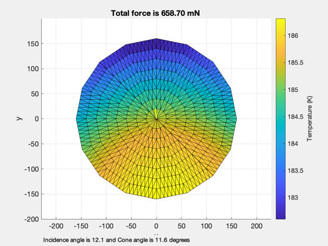
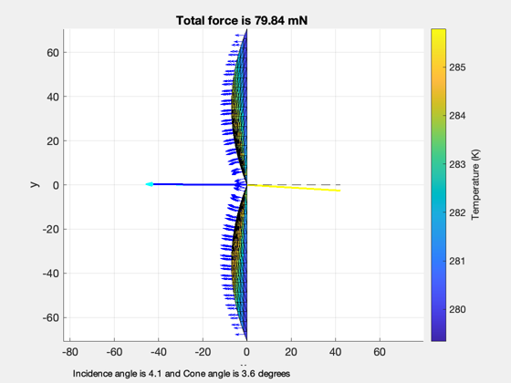
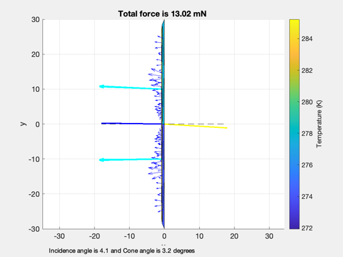
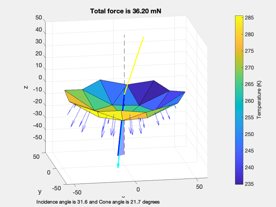

Demonstrate DrawSailMeshVectors for different sail models.
This function calls SolarPressureForce on the input CAD model to
compute the solar force and resulting temperature.
Since version 7.
------------------------------------------------------------------------
See also Unit, DrawSailMeshVectors, CP1Props, SailMesh
------------------------------------------------------------------------
Contents
Define an offset sun vector
uSun = Unit([0.3*randn(2,1); 1]);
Draw vectors for the circular sail model
g = load('CircularSail');
DrawSailMeshVectors( g, uSun )
area =
79127
normal =
2.0108e-12
-2.4158e-13
78374
force =
0.00055549
-0.0062966
-0.65867

Define an offset sun vector
uSun = Unit([1; 0.3*randn(2,1)]);
Draw vectors for the quadrant sail model
g = load('QuadSail_100');
DrawSailMeshVectors( g, uSun )
area =
10310
normal =
10000
9.77e-14
3.4373e-13
force =
-0.079838
0.00056796
0.00034401

Draw vectors for the striped sail model
g = load('StripedSail');
DrawSailMeshVectors( g, uSun )
area =
491.85
normal =
450
-15.91
15.91
force =
-0.0032584
0.0001221
-0.00010193
area =
491.85
normal =
450
15.91
15.91
force =
-0.0032362
-2.9538e-05
-3.447e-05
area =
491.85
normal =
450
15.91
-15.91
force =
-0.0032486
-7.0325e-05
9.0463e-05
area =
491.85
normal =
450
-15.91
-15.91
force =
-0.003276
0.00016324
0.00015827

Do the same thing by hand for a simplified circular mesh
theta = linspace(0,2*pi,8);
theta = theta(1:end-1);
rSail = 50;
x = rSail*cos(theta);
y = rSail*sin(theta);
dBillow = struct('b',0.8,'r',rSail);
[v,f] = SailMesh( x, y, 'HCircularBillow', dBillow, 1 );
uSun = Unit([0.3*randn(2,1); 1]);
[optical, infrared, thermal] = CP1Props;
DrawSailMeshVectors( struct('v',v,'f',f,'optical',optical,'thermal',thermal), uSun );
view(-10,15)
